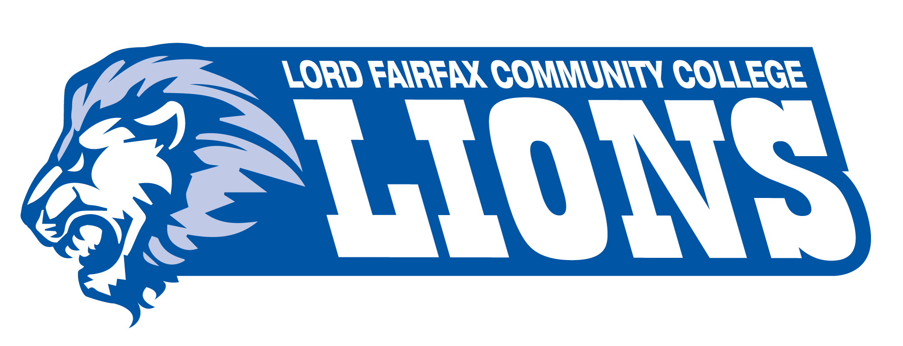

Expected to graduate from Virginia Tech in Spring 2019 with a Bachelor's degree in Professional and Technical Writing.

In 2017, I graduated from Lord Fairfax Community College with my Associate's in Liberal Arts. There I was introduced to my first technical writing class, which led me to apply to Virginia Tech.